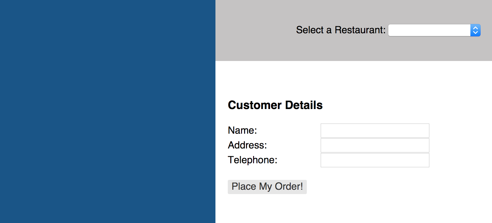
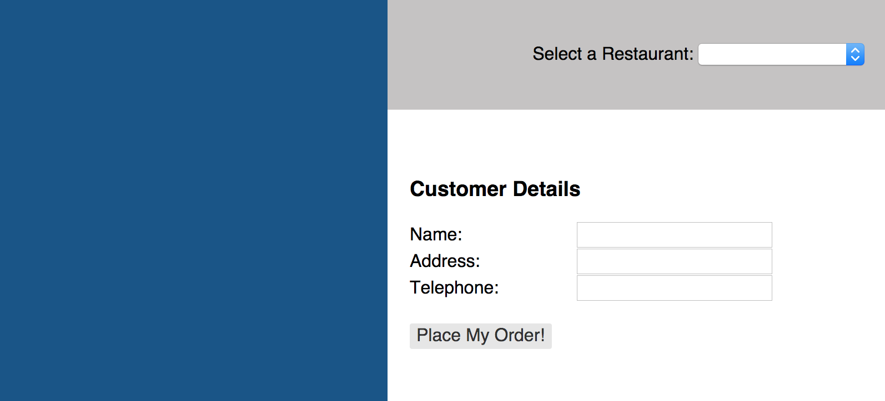

In the template above, we're binding the properties:
name
address
telephone
to the delivery object of the View Model. We do that using both the delivery
section, defined by {{#delivery}} ... {{/delivery}}, and the can-value
attribute. can-value is a can.view.attr attribute that establishes two-way
binding between an element in a template and its associated View Model.
Add the following to order_form.js:
var OrderFormViewModel = can.Map.extend({
delivery: {},
order: {},
createOrder: function(menuItems) {
this.attr('menus').each(function(itemSet) {
itemSet.attr('items').each(function(item) {
if (item.attr('selected')) {
menuItems.push(item);
}
});
});
return new MenuOrderModel({
delivery: this.attr('delivery'),
menuItems: menuItems
});
},
placeOrder: function() {
var menuItems = [];
var order;
order = this.createOrder(menuItems);
order.save(
function() {
var total = 0;
var message = can.sub('Your order has been placed!\n\n' +
'Delivered to:\n' +
' Name: {name}\n' +
' Address: {address}\n' +
' Phone Number: {phone}\n\n' +
'Items:\n', {
name: order.attr('delivery.name'),
address: order.attr('delivery.address'),
phone: order.attr('delivery.telephone')
});
order.attr('menuItems').each(function(item) {
message += can.sub(' {name} - {price}\n', {
name: item.attr('name'),
price: item.attr('price')
});
total += item.attr('price');
});
message += '\nTotal: $' + total;
alert(message);
}, function(xhr) {
alert('Error:', xhr.message);
});
this.attr('order', order);
}
});
can.Component.extend({
tag: 'order-form',
template: can.view('components/order_form/order_form.stache'),
scope: OrderFormViewModel
});
Saving and updating a model
Let's look at a few items in the code above.
Notice that we're creating a new instance of a model (MenuOrderModel) in the
createOrder function. Unlike data access functions (like findAll, findOne),
which are called statically off of the prototype, the save, update, and
delete functions are called off of a specific instance of a model. So, if
we want to create a new order, we will need to work with an instance of the
MenuOrderModel.
We assign the value of this.attr('delivery') to the MenuOrderModel's delivery
property. If you recall, we bound the values of the name, address, and
telephone number fields to the delivery object in the order_form.stache
view template. Now, all we need to do to get the values of those fields is
reference them off of the View Model's delivery property.
To provide fixture support for saving our can.Model, open up fixtures.js
and add the following fixture:
When we created the RestaurantListComponent,
we used the {{data '...'}} Stache key and jQuery to obtain a reference to the
restaurant object associated with the choice the user selected in the
restaurants dropdown. We almost never want to be interacting with the DOM
directly in our application. We want CanJS to take care of that for us, so we
can focus on the application itself. In the createOrder function, instead of
getting our data from the DOM, we get it from our scope.
While this is a handy way to get data using a reference to a DOM element, CanJS
provides a better alternative for binding the viewModel to the state. We'll
cover that in a later chapter.
Non-standard Data Sources
Staying in fixtures.js, append the following to the bottom of the file:
var RestaurantMenusModel = can.Model.extend({
findAll: 'GET /menus/{id}',
parseModels: 'menus'
}, {});
var MenuOrderModel = can.Model.extend({
create: 'POST /order'
}, {});
There's a few things to notice in the code above. First, the fixture that we
defined returned a non-standard data format. That is, it is non-standard for
CanJS. The can.Model.findAll function expects an array from the service it
calls—for example:
Normally, if the findAll function received this data, it would throw an
error. In this case, it does not. This is because we included the
parseModels attribute on the MenuOrderModel.
parseModels is used to convert the raw response of a findAll request into an
object or Array that the model you're defining can use. As you can see, this
function can be particularly useful if you're consuming data from a service that
doesn't fit the format expected by findAll.
Wiring it all up
We can wire all this up easily in a few steps. Edit base_template.stache and add in the custom HTML tag for the
order_form component:
Go out to your app in the browser and reload your page. You should see the following:

One thing you might immediately notice is that both the Restaurant List
component and the Order Component are showing on the page. It might not look the
prettiest, but don't worry about that for the moment. We'll deal with controlling
which Components display when we set up our AppState and Routing.
In the next chapter, we'll talk about connecting all of our components
together using the AppState, Routing, and can.Map's define plugin.
In this Chapter
Get the code for: chapter 5
To illustrate sending data to a service, let's create an order menu from which people can select items.
Create a sub folder under components called
order_formand add the following files:└── components └── order_form ├── order_form.stache └── order_form.jsAdd the following to
order_form.stache:In the template above, we're binding the properties:
nameaddresstelephoneto the
deliveryobject of the View Model. We do that using both thedeliverysection, defined by{{#delivery}} ... {{/delivery}}, and thecan-valueattribute.can-valueis acan.view.attrattribute that establishes two-way binding between an element in a template and its associated View Model.Add the following to
order_form.js:Saving and updating a model
Let's look at a few items in the code above. Notice that we're creating a new instance of a model (
MenuOrderModel) in thecreateOrderfunction. Unlike data access functions (likefindAll,findOne), which are called statically off of the prototype, thesave,update, anddeletefunctions are called off of a specific instance of a model. So, if we want to create a new order, we will need to work with an instance of theMenuOrderModel.We assign the value of
this.attr('delivery')to theMenuOrderModel'sdeliveryproperty. If you recall, we bound the values of thename,address, andtelephonenumber fields to thedeliveryobject in theorder_form.stacheview template. Now, all we need to do to get the values of those fields is reference them off of the View Model'sdeliveryproperty.To provide fixture support for saving our
can.Model, open upfixtures.jsand add the following fixture:Moving from DOM to the model
When we created the RestaurantListComponent, we used the
{{data '...'}}Stache key and jQuery to obtain a reference to therestaurantobject associated with the choice the user selected in the restaurants dropdown. We almost never want to be interacting with the DOM directly in our application. We want CanJS to take care of that for us, so we can focus on the application itself. In thecreateOrderfunction, instead of getting our data from the DOM, we get it from our scope.While this is a handy way to get data using a reference to a DOM element, CanJS provides a better alternative for binding the viewModel to the state. We'll cover that in a later chapter.
Non-standard Data Sources
Staying in
fixtures.js, append the following to the bottom of the file:In
site_models.js, add the following two models:There's a few things to notice in the code above. First, the fixture that we defined returned a non-standard data format. That is, it is non-standard for CanJS. The
can.Model.findAllfunction expects an array from the service it calls—for example:Our fixture, however, is returning an object that contains an array. Our response will look like this:
Normally, if the
findAllfunction received this data, it would throw an error. In this case, it does not. This is because we included theparseModelsattribute on theMenuOrderModel.parseModelsis used to convert the raw response of afindAllrequest into an object or Array that the model you're defining can use. As you can see, this function can be particularly useful if you're consuming data from a service that doesn't fit the format expected byfindAll.Wiring it all up
We can wire all this up easily in a few steps. Edit
base_template.stacheand add in the custom HTML tag for the order_form component:Now, edit your
index.htmlfile to load theorder_form.jsfile:Go out to your app in the browser and reload your page. You should see the following:

One thing you might immediately notice is that both the Restaurant List component and the Order Component are showing on the page. It might not look the prettiest, but don't worry about that for the moment. We'll deal with controlling which Components display when we set up our AppState and Routing.
In the next chapter, we'll talk about connecting all of our components together using the AppState, Routing, and
can.Map's define plugin.‹ Models (& Fixtures) Creating the Menu Component ›